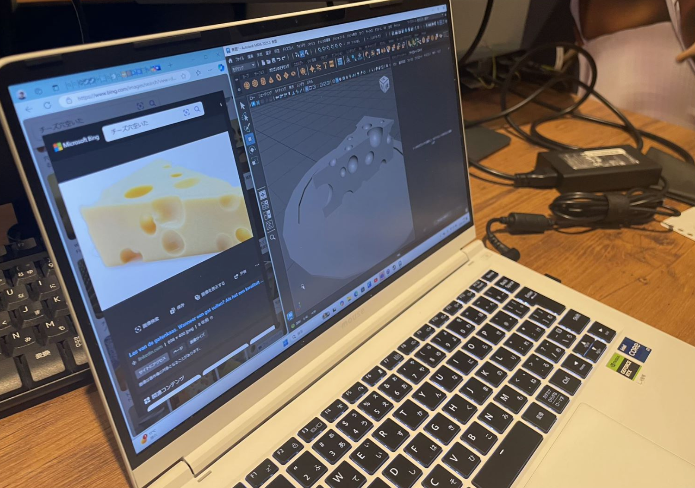
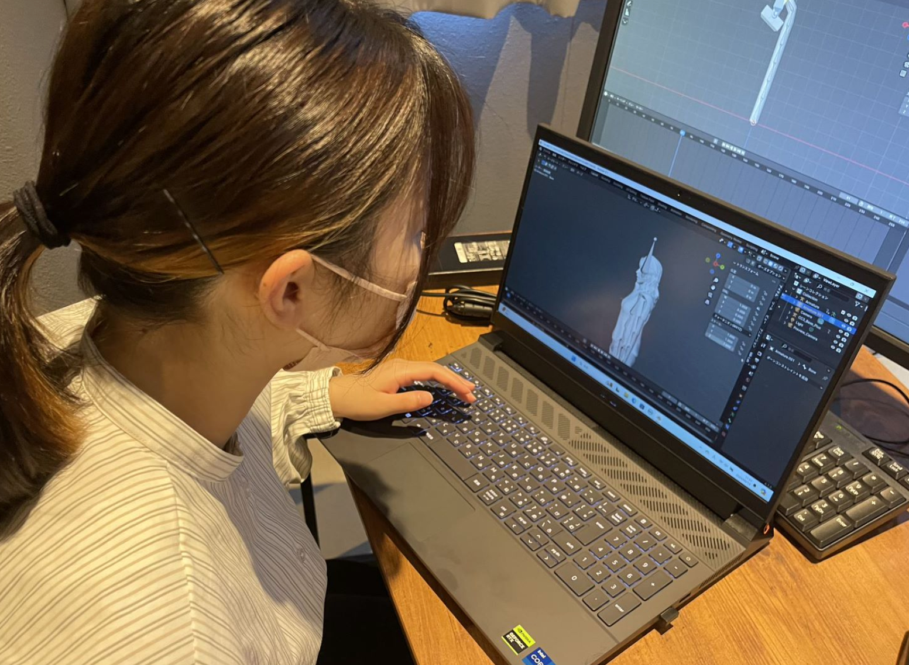
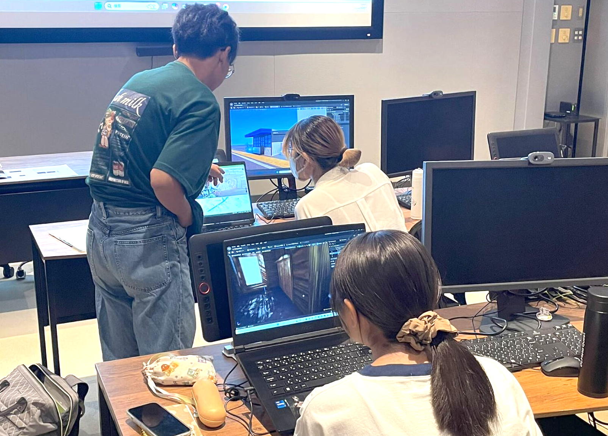
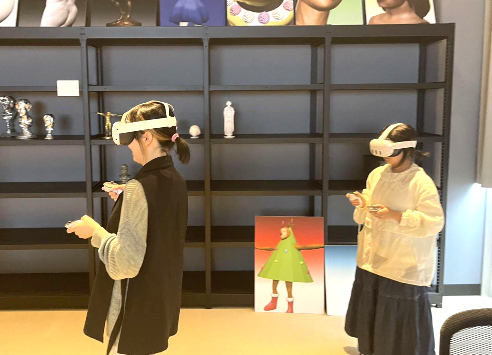
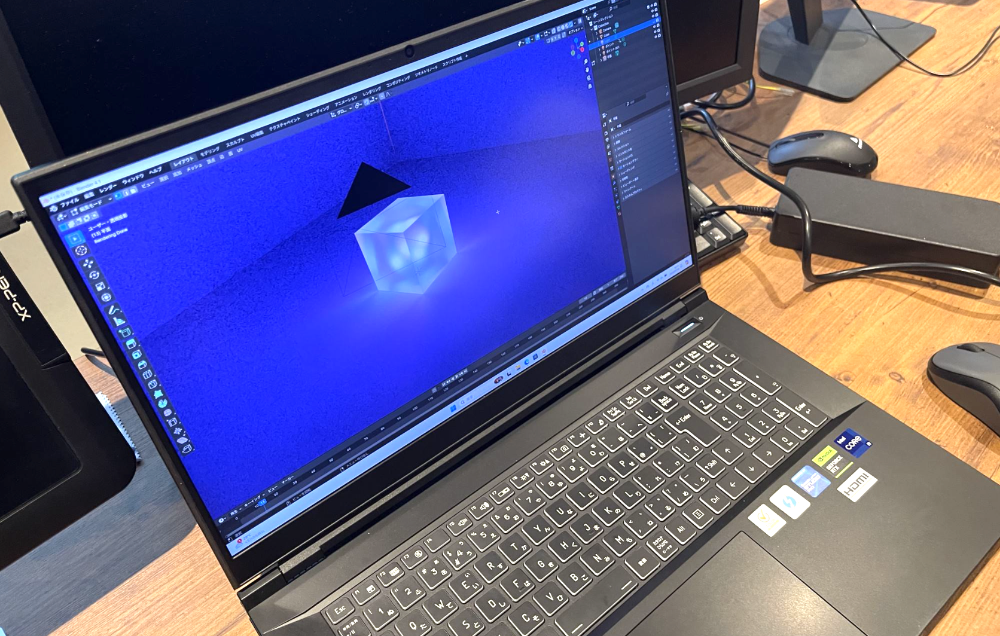
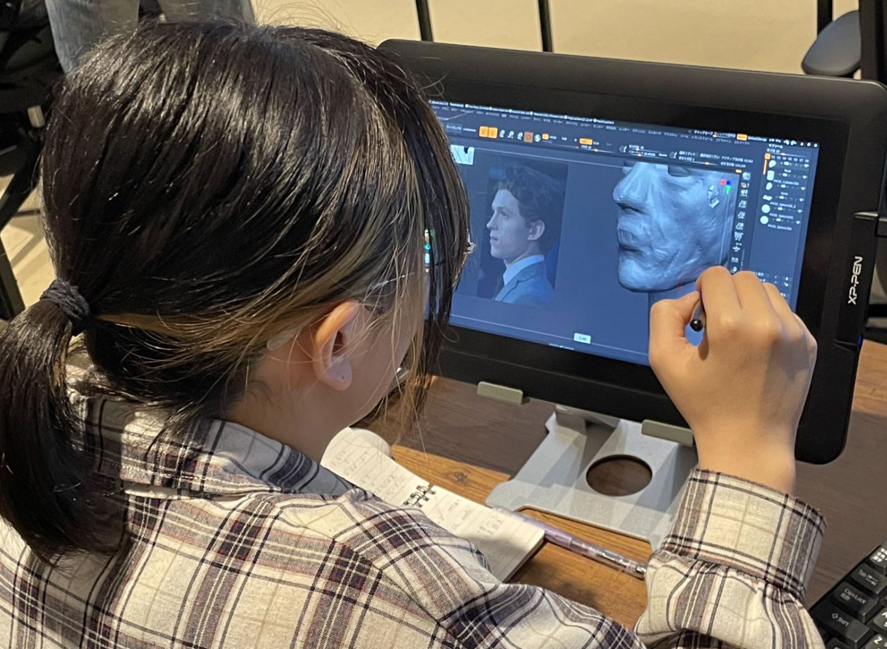
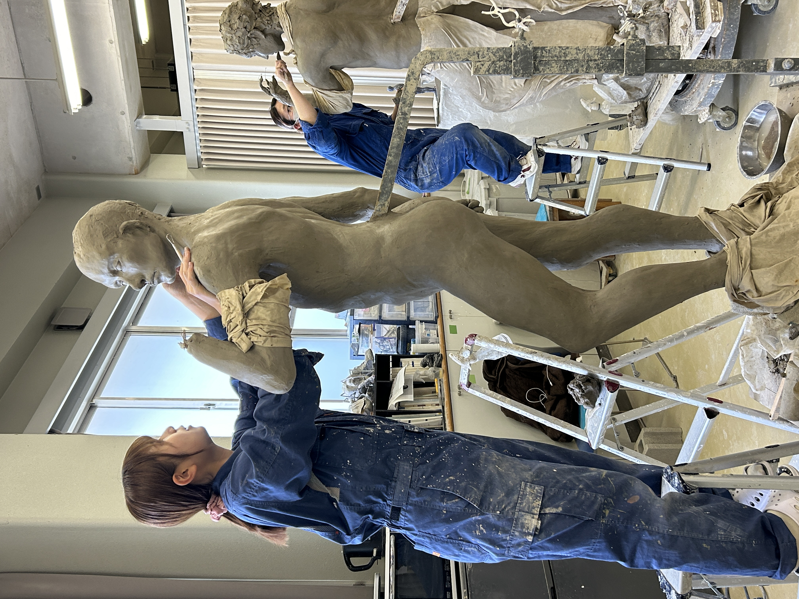
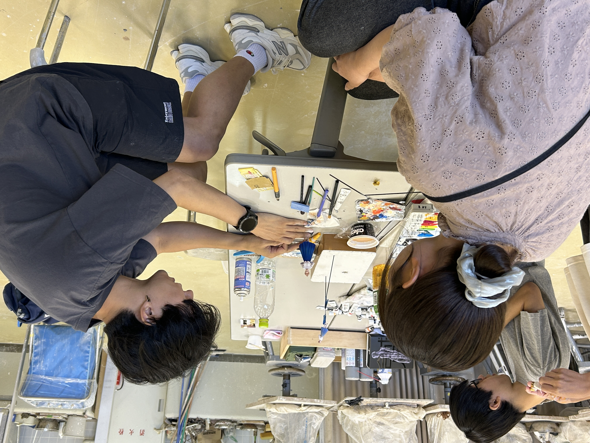
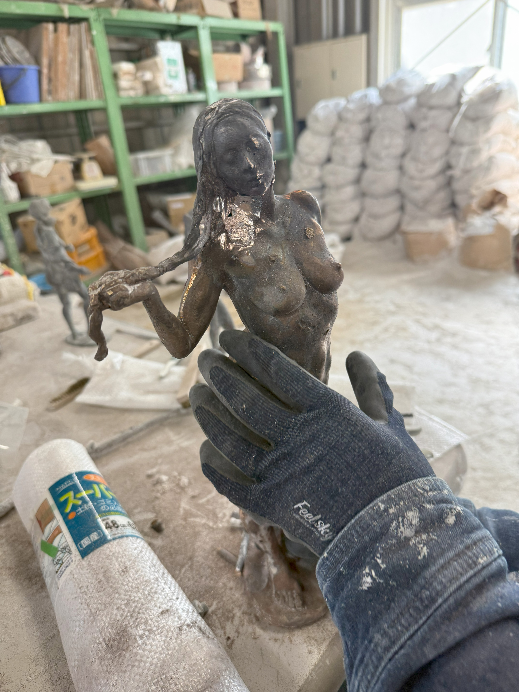
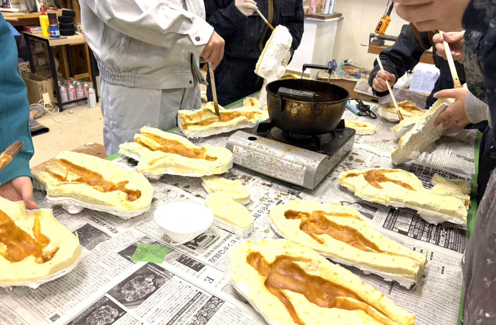

コース詳細
3Dアートコースの詳細情報をご紹介します。最先端のデジタルと伝統的なのフィジカルの融合を目指すカリキュラムとして、それぞれの特徴や学べる内容、学生の一日のスケジュールなどをご覧いただけます。
デジタル
デジタルな学びでは、3DCG、ゲーム、VR/ARなどのデジタル技術を活用した表現方法を学びます。業界標準のソフトウェアを使用した3Dモデリング、アニメーション、ゲームエンジンを活用したインタラクティブコンテンツ制作、VR/AR技術を用いた新しい表現方法など、デジタル技術を駆使した創作活動を行います。
卒業後はゲーム会社、CG制作会社、映像制作会社などでの活躍が期待されます。
3Dモデリング
Maya、Blender、ZBrushなどの業界標準ソフトウェアを使用して、キャラクター、環境、プロップなどの3Dモデルを制作する技術を学びます。
アニメーション
キャラクターアニメーション、物理シミュレーション、モーションキャプチャーなど、3Dモデルに動きを与える技術を習得します。
ゲーム開発
UnityやUnreal Engineなどのゲームエンジンを使用して、インタラクティブなゲームやアプリケーションを開発する方法を学びます。
VR/AR開発
バーチャルリアリティ（VR）や拡張現実（AR）技術を活用した没入型体験の制作方法を学びます。
レンダリングとライティング
フォトリアルなCG映像を作るためのレンダリング技術やライティング手法を習得します。
デジタル彫刻
ZBrushなどのソフトウェアを使用して、デジタル空間で彫刻のように3Dモデルを造形する技術を学びます。
フィジカル
彫刻、フィギュア造形、立体造形などの物理的な表現方法を学びます。伝統的な彫刻技法から最新の3Dプリント技術を活用した造形まで、幅広い立体表現を学びます。フィギュア制作、プロダクトデザイン、空間デザインなど、物理的な形を持つ作品制作に取り組みます。
卒業後はフィギュア制作会社、プロダクトデザイン会社、美術作家などとして活躍できます。
彫刻技法
木彫、石彫、粘土造形など、伝統的な彫刻技法の基礎から応用までを学びます。
フィギュア造形
キャラクターフィギュアの原型制作から塗装、仕上げまでの一連のプロセスを習得します。
鋳造実習
集中実習ではブロンズ像を作成します。
3Dプリント技術
デジタルデータを物理的なオブジェクトに変換する3Dプリント技術の活用方法を学びます。

型取り・複製技術
シリコン型や蝋、石膏型を使った複製技術を習得し、作品の量産方法を学びます。
カーヴィング
スタイロフォームをカット・削り出し、着色とコーティングで仕上げ、カーヴィングの基礎を学ぶ実習を行います。

講義紹介
3Dアートコースでは、デジタルとフィジカルの両分野にわたる多様な講義を提供しています。理論から実践まで、幅広い知識と技術を習得できるカリキュラムを用意しています。以下は代表的な講義の一部です。
3Dモデリング基礎
3DCGの基礎となるモデリング技術を学びます。Maya、Blenderなどのソフトウェアの基本操作からポリゴンモデリングの手法まで、段階的に習得します。
デジタル彫刻
ZBrushを使用したデジタル彫刻の技法を学びます。キャラクターや生物のモデリングに必要な有機的な形状の作成方法を習得します。
人体構造の理解とアニメーション
動きの原理から始まり、キャラクターアニメーションの基礎技術を学びます。タイミングやスペーシングなどのアニメーション原則を実践的に習得します。
造形材料学
彫刻や立体造形に使用される様々な材料の特性と加工方法について学びます。木材、金属、樹脂など多様な素材の扱い方を習得します。
ゲームデザイン概論
ゲーム開発の基礎知識とデザイン理論を学びます。レベルデザインとゲームキャラクターデザインの２つのアプローチを行います。。
VR/AR技術演習
フィジカルとデジタルを融合する技術や技法を学びます。バーチャルリアリティと拡張現実の技術を活用したコンテンツ制作を学びます。没入型体験のデザインと実装方法を習得します。
学生インタビュー
3Dアートコースで学ぶ学生たちの声をお届けします。実際に学んでいる学生の経験や感想、将来の目標などをインタビュー形式でご紹介します。
※ 実際の学生へのインタビュー動画です。学生たちの生の声をお聞きください。
学生の一日
3Dアートコースの学生の一日のスケジュールをご紹介します。授業や制作活動、課外活動など、充実したキャンパスライフをお届けします。
登校・準備
キャンパスに到着し、一日の授業や制作活動の準備をします。
午前の授業
3Dモデリングの基礎や造形理論など、専門的な講義や実習を受講します。
昼食・休憩
学食やカフェテリアで昼食をとり、友人たちと交流します。
午後の実習
専門的な制作実習に取り組みます。デジタルコースの学生はコンピュータルームで3DCG制作、フィジカルコースの学生は工房で造形作業を行います。
自主制作・研究
授業後も残って自分のプロジェクトや課題に取り組みます。教員からの個別指導を受けることもあります。
帰宅
アニメーション研究会やゲーム開発サークルなど、興味のある課外活動に参加します。
アルバイト
帰宅後も自宅で作品制作の続きや、オンラインチュートリアルで新しい技術を学びます。